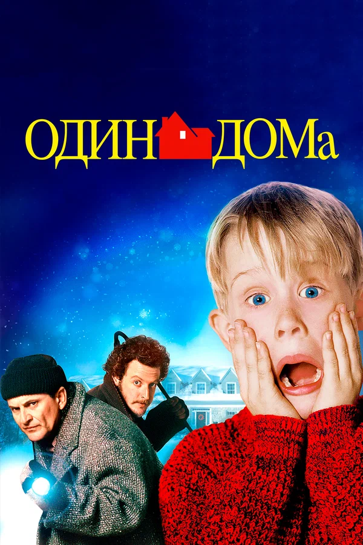

Один дома

| Год | 1990 |
| Страна | США |
| Жанр | Комедия, семейный |
| Режиссёр | Крис Коламбус |
| Продолжительность | 103 мин |
| Рейтинг |
Описание фильма
Восьмилетний Кевин МакКаллистер случайно остаётся дома один, когда его огромная семья улетает на Рождество в Париж. Сначала он наслаждается свободой, но вскоре понимает, что в его доме пытаются ограбить два неуклюжих вора — Гарри и Марв. Теперь Кевину предстоит защитить свой дом с помощью изобретательных ловушек и острого ума.